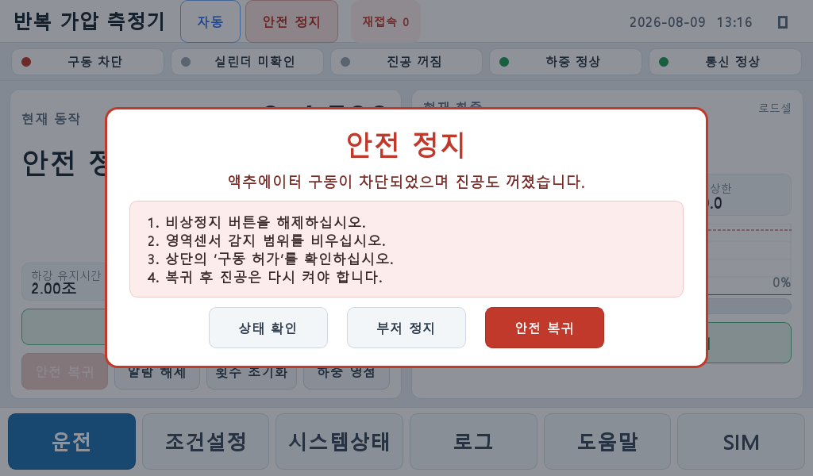
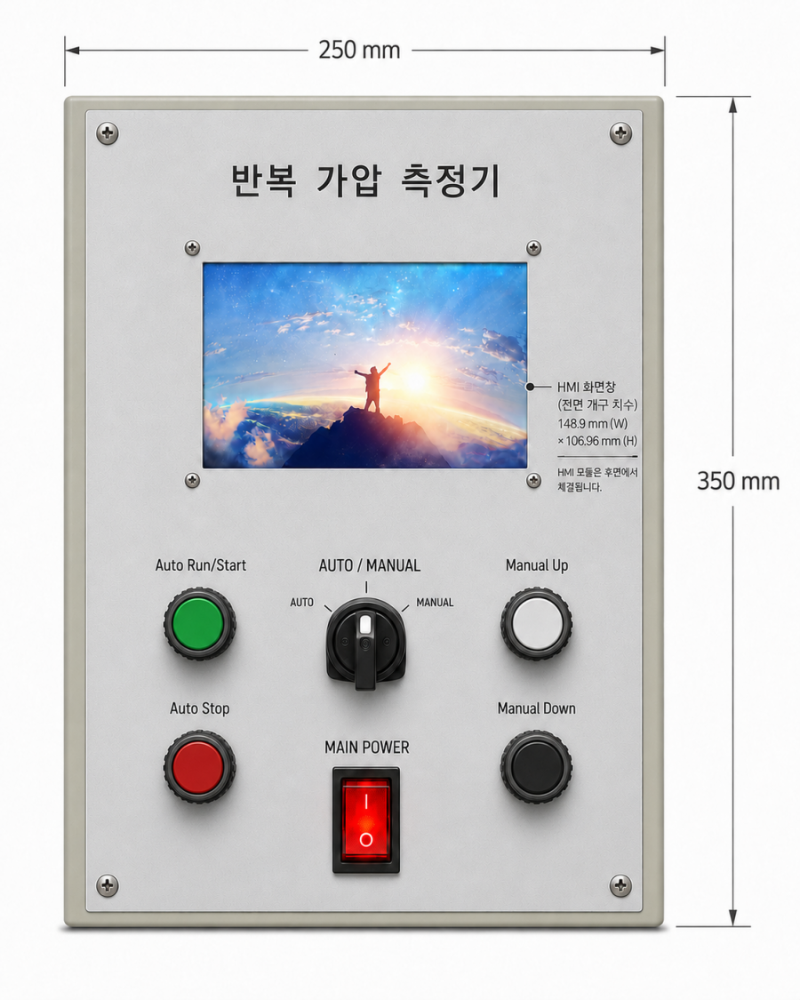
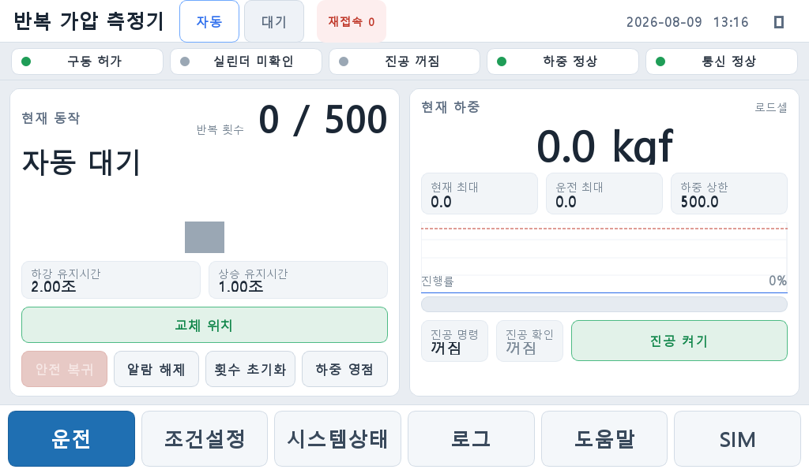
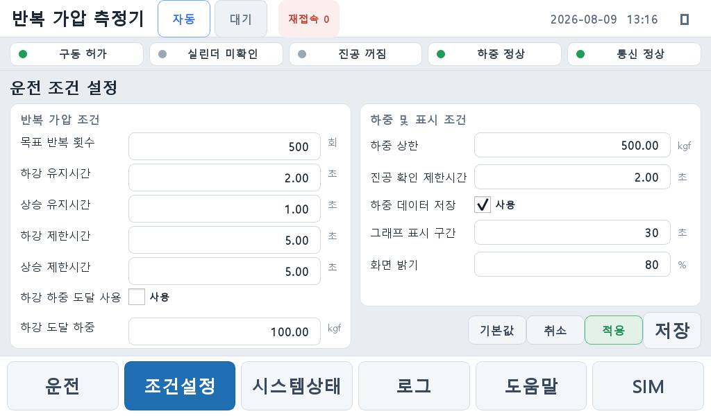
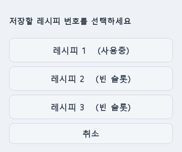
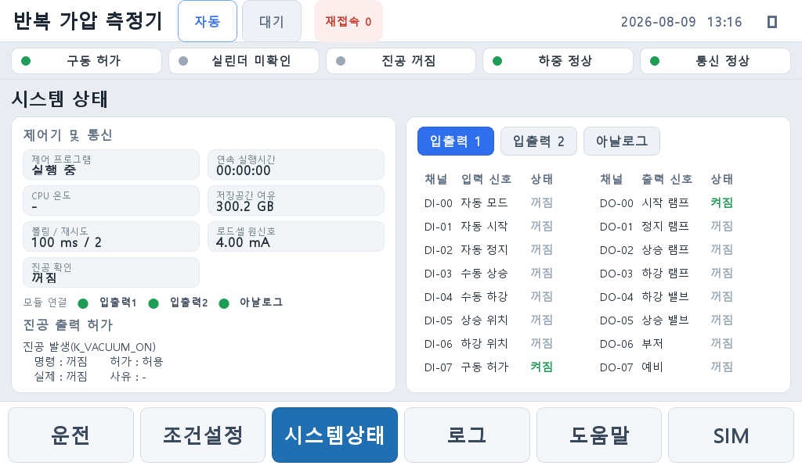

[확인필요] = 사양 확인 필요, [그림] = 사진·도면 삽입 예정.안전한 작업 환경에서 작업 효율을 높이고 상해 사고를 예방하기 위해 아래 안전 수칙을 준수하십시오. 본 설명서 지침을 지키면 장비를 오랫동안 최적의 성능으로 사용할 수 있습니다.
| 구분 | 의미 |
|---|---|
| 감전 주의 | 제어반·전원부 내부에 고전압. 자격자 외 개방 금지. |
| 비상정지 | 위험 시 즉시 비상정지(EMO) 버튼을 누르십시오. |
| 협착 주의 | 가압 실린더·가동부에 손을 넣지 마십시오. |
| 접근 금지 | 운전 중 라이트 커튼 감지 영역에 신체를 넣지 마십시오. |
안전 정지 시 아래 화면이 표시됩니다.

1 2 3| 번호 | 명칭 | 기능 |
|---|---|---|
| 1 | 상태 확인 | 오버레이를 잠시 숨기고 시스템 상태 화면으로 이동해 원인 확인 |
| 2 | 부저 정지 | 부저를 임시 음소거(알람 해소 시 자동 재알람) |
| 3 | 안전 복귀 | 원인 제거 후 복귀. 안전 복귀를 눌러야 부저가 멈춤 |
[그림] 명판 위치 및 표기(모델·전원·공압·제조번호·제조일). [확인필요]
본 장비는 공압 실린더로 시료에 반복 가압을 가하고 로드셀로 하중을 실시간 측정하는 시험 장비입니다. 터치스크린으로 반복 횟수·유지시간·하중 상한 등을 설정하여 자동 반복 시험을 수행합니다. 진공 흡착(옵션)은 자동 사이클과 독립된 수동 기능입니다.
| 항목 | 값 |
|---|---|
| 모델 | RPT-1000 |
| 제조사 | 이엠에스 (EMS) |
| 전원 | 220 V 단상, 5 A |
| 공압 | 0.4 MPa 이상 권장 |
| 로드셀 | CSB-1T, 1000 kgf 만용량, 4–20 mA |
| 반복 횟수 | 최대 500,000 회 |
| 디스플레이 | 7" 터치스크린, 1024×600 |
| 외형(WxDxH)·중량 | [확인필요] |
지속 개량으로 사양은 예고 없이 변경될 수 있습니다.
제어함 전면에는 터치스크린(HMI)과 아래의 조작 스위치가 있습니다. 각 스위치의 역할은 다음과 같습니다. (제어함 250 × 350 mm, HMI 개구 148.9 × 106.96 mm)

1 3 4 2 6 5| 번호 | 스위치 | 역할 |
|---|---|---|
| 1 | Auto Run/Start (녹색) | 자동 모드에서 자동 반복 사이클 시작. 완료 후 다시 누르면 재시작. |
| 2 | Auto Stop (적색) | 진행 중인 자동 사이클 중지(자동 대기로 복귀). |
| 3 | AUTO / MANUAL 셀렉터 | 운전 모드 선택. 좌=AUTO(자동), 우=MANUAL(수동). |
| 4 | Manual Up (백색) | 수동 모드에서 실린더 상승(누르는 동안, 상승 센서 도달 시 정지). |
| 5 | Manual Down (흑색) | 수동 모드에서 실린더 하강/가압(누르는 동안). |
| 6 | MAIN POWER (로커) | 장비 메인 전원 ON( I ) / OFF( O ). |

1 2 3 4 5 6 7 8 9 10 11 12| 번호 | 명칭 | 기능 |
|---|---|---|
| 1 | 모드/상태 배지 | 현재 자동/수동 모드와 상태(대기·운전·안전정지 등) 표시 |
| 2 | 상태 스트립 | 구동 허가 · 실린더 · 진공 · 하중 정상 · 통신 정상 램프 |
| 3 | 반복 횟수 | 현재 / 목표 반복 횟수 |
| 4 | 현재 동작 | 현재 단계 표시(자동 대기·하강 중·가압 유지 중 등), dwell 남은시간 |
| 5 | 하강/상승 유지시간 | 현재 설정된 Dwell 시간 표시 |
| 6 | 교체 위치 | 실린더를 상단 센서까지 올려 정지(시료 교체용) |
| 7 | 조작 버튼 | 안전 복귀 · 알람 해제 · 횟수 초기화 · 하중 영점 |
| 8 | 현재 하중 | 로드셀 실시간 하중(kgf) |
| 9 | 현재/운전 최대·하중 상한 | 사이클/운전 최대 하중, 하중 상한 설정값 |
| 10 | 하중 트렌드·진행률 | 실시간 하중 그래프, 반복 진행률 |
| 11 | 진공 조작 | 진공 명령/확인 표시 + 진공 켜기/끄기(수동 전용) |
| 12 | 하단 네비게이션 | 운전 · 조건설정 · 시스템상태 · 로그 · 도움말 |

6 1 2 3 4 5| 번호 | 명칭 | 기능 |
|---|---|---|
| 1 | 항목 라벨 | 반복 가압 조건(목표 횟수·유지/제한시간·하강 하중 도달 등) |
| 2 | 값 입력 | 탭하면 숫자 키패드로 편집(대기값에만 저장) |
| 3 | 사용 체크박스 | 하강 하중 도달 사용 등 on/off |
| 4 | 하중·표시 조건 | 하중 상한, 진공 확인 시간, 그래프 구간, 화면 밝기 |
| 5 | 조작 버튼 | 기본값 · 취소 · 적용 · 저장(레시피) |
| 6 | 레시피 버튼 | 레시피 1~3 불러오기(빈 슬롯은 “(빈)” 표시) |
| 항목 | 단위 | 설명 |
|---|---|---|
| 목표 반복 횟수 | 회 | 자동 반복 횟수 |
| 하강/상승 유지시간 | 초 | 하강/상승 후 유지(Dwell) 시간 |
| 하강/상승 제한시간 | 초 | 이동시간(센서 미도달 시 이 시간 후 진행, 짧은 스트로크 가능) |
| 하강 하중 도달 사용 / 도달 하중 | 체크 / kgf | 로드셀 기준으로 하강 도달 판정 |
| 하중 상한 | kgf | 초과 시 과가압 보호(정지) |
| 진공 확인 제한시간 | 초 | 진공 ON 후 확인 신호 대기 |
| 그래프 표시 구간 / 화면 밝기 | 초 / % | 트렌드 시간 / 디스플레이 밝기 |
자주 쓰는 운전 조건을 레시피 3개 슬롯에 저장해 두고 한 번에 불러올 수 있습니다.
■ 레시피 저장

■ 레시피 불러오기

1 2 3 4| 번호 | 명칭 | 기능 |
|---|---|---|
| 1 | 제어기·통신 요약 | 프로그램·실행시간·CPU 온도·저장공간·폴링·로드셀 원신호·진공 확인 |
| 2 | 모듈 연결 램프 | 입출력1 · 입출력2 · 아날로그 통신 상태(초록=정상) |
| 3 | 탭 | 입출력 1 / 입출력 2 / 아날로그 |
| 4 | I/O 표시 | DI/DO 상태, 아날로그(A0~3 전류 mA, A4~7 전압 V) |
유지보수 화면에서 무부하 상태 하중 영점, 기준 하중으로 스팬 보정.
[그림] 스피드 컨트롤러/레귤레이터 실물 사진 삽입 예정.
안전 정지 : 비상정지·라이트 커튼·구동 허가 차단 시 발생. 모든 액추에이터/진공 OFF, 부저(안전 복귀까지). 복귀 절차는 §1.3.
| 알람 | 원인 | 조치 |
|---|---|---|
| 밸브 인터록 | 상승/하강 동시 명령 | 입력 확인 |
| 수동 동시 입력 | Up/Down 동시 | 한쪽만 |
| 상승 위치 미도달 | 교체 이동 시간 초과 | 배선/센서·시간 확인 |
| 하중 상한 초과 | 과가압 | 압력(레귤레이터)·하중 상한 확인 |
| 통신 오류 | USB/RS-485 노이즈(재열거) | 페라이트·배선 분리(§11) |
| 진공 경고 | 진공 미도달/신호 이상 | 배관·센서 확인(운전엔 영향 없음) |
| 고장 | 원인 | 조치 |
|---|---|---|
| 화면 무표시·미동작 | 전원 미연결/차단기 트립 | 전원·차단기 확인, 플러그 재연결 |
| 상단 “구동 차단” 지속 | 비상정지/라이트 커튼/구동 허가 회로 | 원인 제거 후 안전 복귀 |
| 통신 끊김·재접속 잦음 | 솔레노이드 스위칭 노이즈(USB 재열거) | USB 페라이트, 솔 스너버, 통신선 분리 |
| 실린더가 멈추지 않음 | 밸브/배선(예: DO COM에 +24V 오배선) | 배선 점검, 싱크 COM=0V, 5/3 중립 확인 |
| 하중 값 이상 | 로드셀 영점/스팬·배선 | 영점·스팬 재보정, 4–20 mA 배선 확인 |
| 자동 시작 안 됨 | 셀렉터 MANUAL/구동 차단/알람 | AUTO 확인, 알람 해제, 구동 허가 확인 |
본 설명서의 내용은 장비 개선에 따라 변경될 수 있습니다.